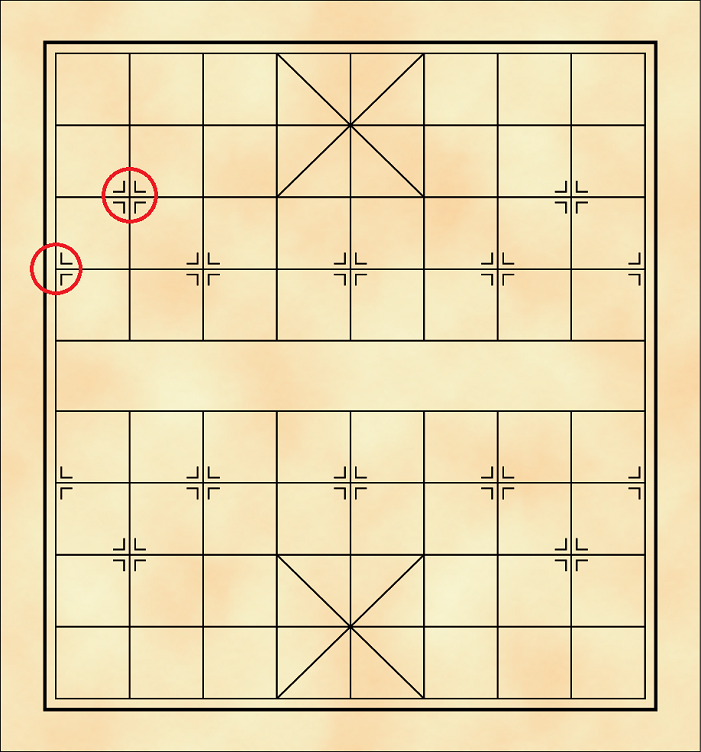

หมากรุกจีน
การจัดวางหมาก และกระดาน
หมากรุกจีนจะใช้กระดานขนาด 9แถว x 8หลัก (จุดตัดจำนวน 10 x 9 จุด) แตกต่างจากกระดานหมากรุกทั่วๆ ไป ทำให้ไม่สามารถใช้กระดานประเภทอื่นมาแทนได้ โดยกระดานหมากรุกจีนจะมีเพียงสีเดียวทั้งกระดาน ตัวหมากจะวางลงบนจุดตัด และมีการแบ่งกระดานเป็น 3 บริเวณคือ เขตพระราชวัง แม่น้ำ และบริเวณทั่วไป
ตัวหมากจะแบ่งออกเป็น 2 ฝ่าย ใช้สี “แดง” กับ “ดำ” เป็นตัวกำหนด ซึ่งการจัดเรียงหมากของทั้ง 2 ฝ่ายจะเป็นไปในรูปแบบเดียวกันคือ
แถวแรก “กือ(เรือ)-เบ๊(ม้า)-เฉีย(ช้าง)-สือ(องครักษ์)-ตี่(ขุน)-สือ-เฉีย-เบ๊-กือ”
แถวที่สามจะวาง “เผ่า(ปืนใหญ่)” 2 ตัว โดยวางเว้นจากขอบกระดานแต่ละด้านมา 1 จุด
แถวที่สี่จะวาง “จุก(เบี้ย)” 5 ตัว โดยวางตัวแรกที่จุดขอบกระดาน แล้วเว้น 1 จุดเพื่อวางตัวต่อไปจนครบ
ซึ่งกระดานหมากรุกจีนโดยทั่วไปจะมีเครื่องหมายระบุตำแหน่งวางหมากเริ่มต้น เพื่อเพิ่มความสะดวกในการจัดวางหมากดังภาพ
|  |
|
เครื่องหมายระบุตำแหน่งวางหมาก |
การจัดวางหมากบนกระดานของหมากรุกจีน |
กติกาและวิธีการเล่น
ผู้เล่นแต่ละฝ่ายผลัดกันเดินหมากของฝ่ายตนเองครั้งละ 1 ตัว ส่วนใหญ่สีแดงจะได้เริ่มก่อน (เดิมไม่มีการกำหนดตายตัว และต่างกันไปตามแต่ละที่)
การเดินหมาก
การเดินหมากจะเดินไปตามจุดตัดแต่ละจุดบนตารางตามกฎการเดินของหมากแต่ละตัว โดยสามารถเดินไปยังจุดที่ว่างอยู่ได้ตามปกติ ไม่สามารถเดินข้ามหมากตัวอื่นที่ขวางเส้นทางการเดินได้ หากช่องที่สามารถเดินไปได้มีหมากขวางอยู่ ก็ให้ดูฝ่ายของหมากที่ขวาง หากเป็นฝ่ายเดียวกันจะไม่สามารถเดินไปยังช่องนั้นได้ แต่หากเป็นฝ่ายตรงข้ามสามารถเดินไปยังช่องนั้นเพื่อ “กินหมาก” ของฝ่ายตรงข้ามได้ โดยหมากตัวที่ถูกกินจะถูกนำออกนอกกระดาน ไม่สามารถนำมาเล่นต่อได้ (ทั้งนี้หมากบางชนิดจะมีข้อยกเว้นในการกินหมากอยู่ ต้องดูตามกฎการเดินหมากด้วย)
การกินหมาก
การขัดขา เกิดขึ้นเฉพาะ “เฉีย” กับ “เบ๊” เท่านั้น คือการที่มีหมากขวางทางเดินทำให้ไม่สามารถเดินไปยังจุดที่ว่างอยู่ตามระยะได้ เนื่องจากเกมนี้ไม่มีการเดินใดที่สามารถกระโดดข้ามหมากอื่นได้ โดยเฉียจะโดนขัดขาแนวทแยง ส่วนเบ๊จะโดนขัดขาแนวตรงดังภาพ
 |
 |
การขัดขาเฉีย |
การขัดขาเบ๊ |
เขตพระราชวัง เป็นเขตจัตุรัสขนาด 9 x 9 จุด บริเวณกลางกระดานของทั้ง 2 ฝ่าย ซึ่งหมาก 2 ตัว คือ “ตี่” และ “สือ” สามารถเดินได้ภายในเขตนี้เท่านั้น
เขตพระราชวัง
แม่น้ำและการเลื่อนยศ เป็นบริเวณแถวยาวกลางกระดานที่ใช้แบ่งทั้ง 2 ฝ่ายออกจากกัน โดยมีหมาก 2 ตัวที่ได้รับผลกระทบจากเขตนี้ คือ “เฉีย” จะไม่สามารถเดินข้ามแม่น้ำไปฝั่งตรงข้ามได้ ส่วน “จุก” เมื่อข้ามแม่น้ำจะได้รับการเลื่อนยศให้มีอำนาจการเดินมากขึ้น
หากเดินหมากไปยังช่องที่หมากตัวนั้นสามารถกินตี่ของฝ่ายตรงข้ามได้ในตาต่อไป จะขานเรียกตานี้ว่า “รุก” โดยตาต่อไปของฝ่ายตรงข้ามต้องนำหมากอื่นมาป้องกัน หรือเดินตี่หนีไปจากช่องที่ถูกเล็งกินอยู่ก่อนเท่านั้น
การรุก (กือแดงรุกตี่ดำ)
ซึ่งหากตี่ที่ถูกรุกอยู่ไม่สามารถเดินหนี, ป้องกันการถูกรุก หรือกินหมากที่รุกอยู่ได้ จะเรียกการรุกครั้งนี้ว่า “รุกฆาต” หรือ “รุกจน” และฝ่ายที่ถูกรุกฆาตจะเป็นฝ่ายแพ้ไป

การรุกจน (หมากแดงรุกจนหมากดำ)
แม้ตี่ไม่ได้ถูกรุก แต่ผู้เล่นไม่สามารถเดินหมากตัวใดได้เลยหรือเดินตี่ได้แต่จะถูกกินตี่ จะเรียกตานี้ว่า “เข้าตาอับ” ซึ่งฝ่ายที่เข้าตาอับจะเป็นฝ่ายแพ้ (ต่างจากหมากรุกประเภทอื่นที่ให้ถือว่าเสมอกัน)

เข้าตาอับ
หากมีการจับเวลา ฝ่ายที่ไม่สามารถรักษาเวลาการเล่นของตนได้จะเป็นฝ่ายแพ้เช่นกัน
การเดินซ้ำหรือรุกล้อ คือมีตาเดินที่ทำให้เกิดรูปของหมากบนกระดานซ้ำถึง 3 ครั้ง หากเป็นการบังคับเดินซ้ำ ฝ่ายที่ถูกบังคับให้เดินซ้ำจะเป็นฝ่ายแพ้ แต่หากเดินซ้ำทั้งที่ไม่ถูกบังคับเดินจะถือว่าเสมอกัน
การประจันหน้า คือการที่ฝ่ายใดฝ่ายหนึ่งถูกบังคับให้เดินตี่ออกมาประจันหน้ากับตี่ฝ่ายตรงข้าม โดยไม่มีหมากอื่นใดขวางอยู่ ฝ่ายที่ต้องเดินออกมาจะเป็นฝ่ายแพ้

การประจันหน้า
การนับศักดิ์หมาก จะเริ่มนับทันทีเมื่อฝ่ายเป็นรองเหลือตี่เพียงตัวเดียวเท่านั้น ส่วนฝ่ายเป็นต่อเหลือหมากมากพอที่จะรุกตี่ให้จนได้ ถ้าสามารถนับได้ครบตามเงื่อนไขจะถือว่าเสมอกัน (ทั้ง 2 ฝ่ายผลัดกันเดินเสร็จนับเป็น 1 ครั้ง เริ่มจากฝ่ายเป็นรอง) โดยจะนับไปสุดที่ใดนั้น ให้ดูหมากที่ฝ่ายเป็นต่อมีดังนี้
มีกืออยู่ 2 ตัว นับถึง 9
มีกืออยู่ 1 ตัว นับถึง 18
ไม่มีกือแล้ว แต่มีเผ่า 2 ตัว นับถึง 27
ไม่มีกือแล้ว แต่มีเบ๊ 2 ตัว นับถึง 27
ไม่มีกือ เผ่า และเบ๊แล้ว แต่มีจุก 5 ตัว นับถึง 18
ไม่มีกือ เผ่า และเบ๊แล้ว แต่มีจุก 4 ตัว นับถึง 27
ไม่มีกือ เผ่า และเบ๊แล้ว แต่มีจุก 3 ตัว นับถึง 36
ไม่มีกือ เผ่า และเบ๊แล้ว แต่มีจุก 2 ตัว นับถึง 45
ทั้งนี้ฝ่ายเป็นรองมีสิทธิ์ที่จะเลือกนับศักดิ์ที่น้อยกว่าครบก่อนได้ เมื่อฝ่ายเป็นรองนับจนครบแล้ว ฝ่ายเป็นต่อจะมีโอกาสเดินได้อีก 1 ตา หากไม่สามารถรุกฆาตอีกฝ่ายได้ จึงจะถือว่าเสมอ (สรุปผลที่ตาฝ่ายเป็นต่อ)
รุกไม่จนเพราะมีหมากไม่เพียงพอ จะเกิดขึ้นได้เมื่อสำรวจบนกระดานพบว่าไม่เหลือหมากเพียงพอที่จะมีฝ่ายใดขานรุกจนกันได้ โดยที่เข้าเงื่อนไขหลักๆ ดังต่อไปนี้
เหลือตี่ กับ ตี่
เหลือตี่ และจุกตัวเดียว กับ ตี่
เหลือตี่ และเบ๊ตัวเดียว กับ ตี่
เหลือตี่ และเผ่าตัวเดียว กับ ตี่
เหลือตี่ และเฉียตัวเดียว หรือ 2 ตัว กับ ตี่
เหลือตี่ และสือตัวเดียว หรือ 2 ตัว กับ ตี่
การขอยอมแพ้ / ขอเสมอ สามารถขอเมื่อไหร่ก็ได้ แต่การขอเสมอต้องได้รับการยินยอมจากทั้งสองฝ่าย
การผิดกติกา (Forfeit) ฝ่ายที่โกง, ทำผิดกฎของเกม หรือผิดข้อตกลงในการแข่งขันจะถูกปรับเป็นฝ่ายแพ้